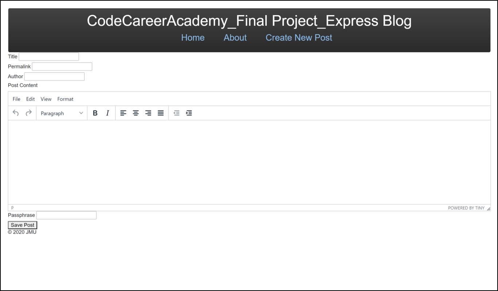

I created this project in an effort to learn more about Forms and capturing data. Using my background with dental software, I chose to include Insurance Companies and Employers as seperate entities to be associated with
the patient.
Technologies Used
- MongoDB Atlas
- Express
- Node.js
- JavaScript
- Pug
- CSS
My previous project taught me the importance of starting with the smallest functional piece of code and building from there.
Technologies Used
- JavaScript
- Bootstrap
- HTML5
- CSS
JavaScript Calculator
Continuing on my development journey, I began looking for some 'rite of passage' projects. After reviewing several popular lists, the calculator became a clear choice.
Technologies Used
Express Blog
The final project for Code Career Academy's frontend developer course. All focus was placed on backend functionality, with Bootstrap providing bare-bones style. The MVC model was
a primary focus of the course and this project in particular.

CCA Blog Home Page

CCA Blog - Creating a Post
Technologies Used
- Express
- Node.js
- JavaScript
- EJS
- tinyMCE
- CSS